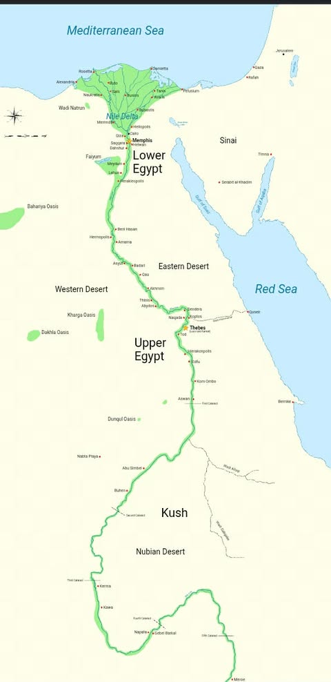

Matatagpuan ang bansang Ehipto sa hilagang-silangang sulok ng kontinenteng Africa.
Ito ay pinalilibutan ng malawak na disyerto na nagsisilbing likas na harang laban sa mga mananakop.

Ang Ilog Nile ay ang sentro ng buhay sa Ehipto dahil nasa gitna ng disyerto ang Ehipto. Ang Nile lang ang nagbigay ng tubig, pagkain, at transportasyon at iba pa tulad sa mga sumusunod:
- Sa kabuhayan:
Dahil sa taunang pagbaha ng Nile, nag-iiwan ito ng matabang lupa (silt) na perfect sa pagsasaka ng trigo at barley. Kaya naging magsasaka ang karamihan.
- Sa pamumuhay:
Sa Nile sila kumukuha ng inuming tubig, pangingisda, at doon din dumadaan ang kanilang mga bangka para magkalakal.
- Sa paniniwala at ugnayan:
Sinamba nila ang Nile bilang isang diyos. Ang pagbaha nito ang naging basehan ng kanilang kalendaryo at nagturo sa kanila ng pagtutulungan at paggalang sa kalikasan. Kung walang Nile, walang kabihasnang Ehipto.
Mahalaga ang pagtutulungan ng mga tao sa pagpapatayo ng mga irigasyon at piramide at sa pag-iisa ng bansa dahil napakalalaki at mahihirap gawin ang mga ito.Sa pamamagitan ng pagkakaisa, mas madali nilang nagawa ang mga irigasyon, piramide, napalakas ang kanilang bansa,napamahalaan ang tubig ng Ilog Nile, napaunlad ang agrikultura, at napanatili ang kaayusan at pagkakaisa ng sinaunang Ehipto. Ang mga proyektong ito ay malalaki, masalimuot, at hindi kayang tapusin ng iisang tao lamang. Bukod pa rito, ang pagkakaisa ay nagpapatibay sa samahan ng mga mamamayan, na ginagawang mas matatag, payapa, at maunlad ang buong bansa.
Ipinapakita ng kanilang karanasan na sa pamamagitan ng pakikipagtulungan sa kalikasan tulad ng paggawa ng irigasyon, pagtatanim ayon sa panahon, at paggalang sa ilog, nagkaroon sila ng saganang ani at matatag na pamumuhay. Dahil dito, umunlad ang kabihasnan nila dahil natuto silang makibagay sa kalikasan, hindi labanan ito
.